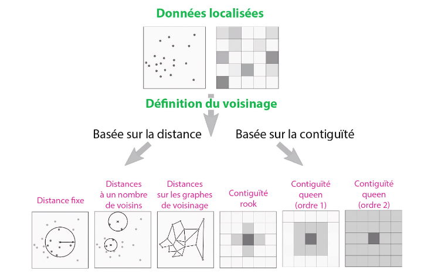
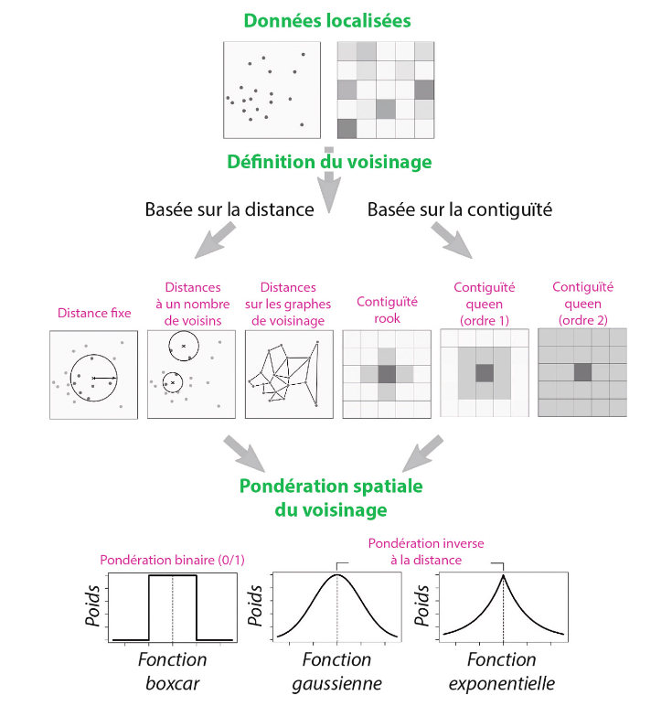
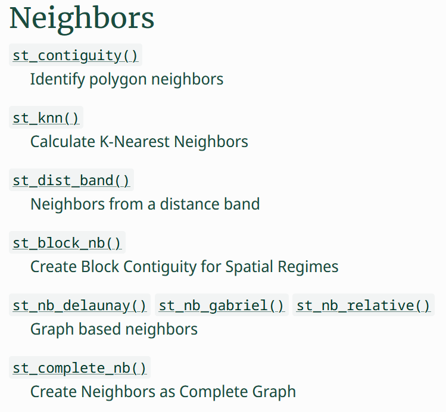
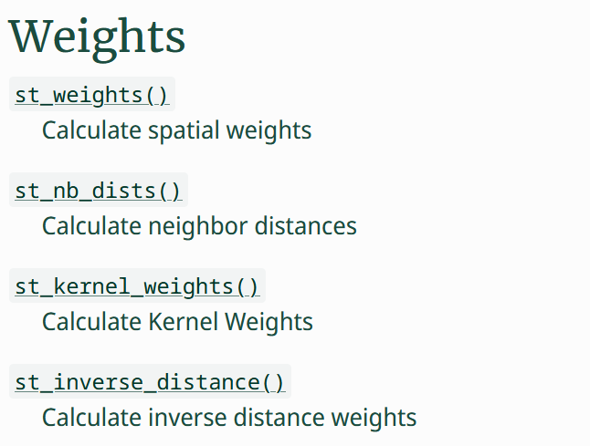
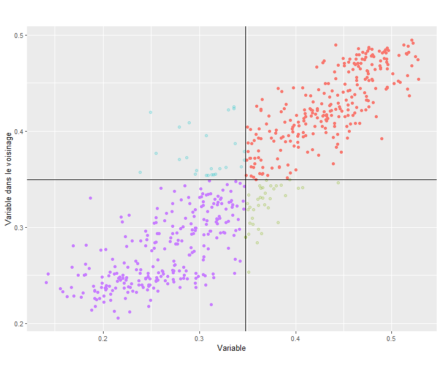
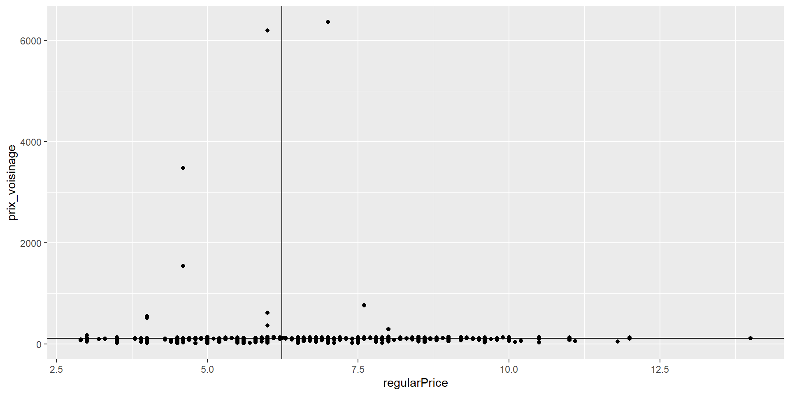
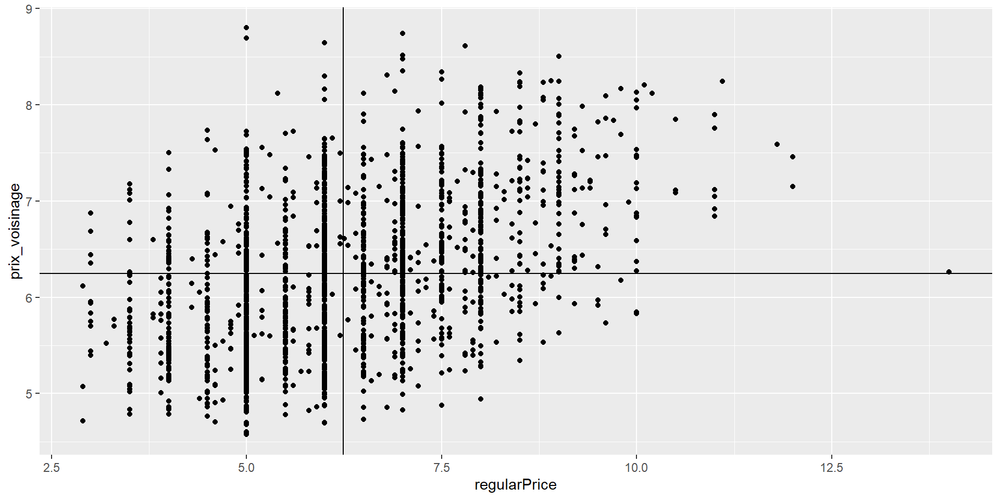
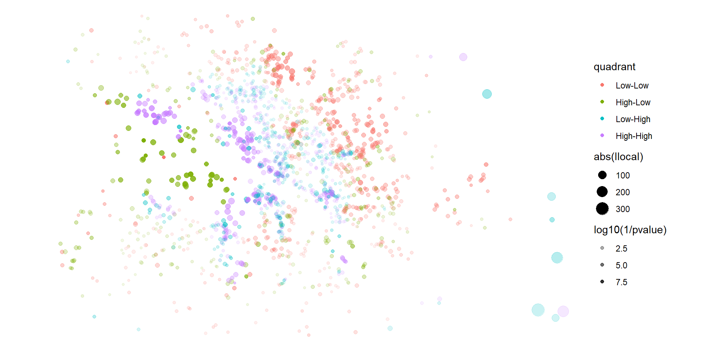

M2 Carthagéo - Du discret au continu - Séance 7
Séance 7 - Mesurer l’auto-corrélation spatiale
Université Paris 1 Panthéon-Sorbonne
Définition
L’autocorrélation mesure la corrélation d’une variable avec elle-même, lorsque les observations sont considérées avec un décalage dans le temps (autocorrélation temporelle) ou dans l’espace (autocorrélation spatiale).
Si la présence d’une qualité dans une partie d’un territoire rend sa présence dans les zones voisines plus ou moins probable, il existe un effet de contiguïté dans la structure spatiale, le phénomène montre une autocorrélation spatiale.
Lorsque l’autocorrélation est positive, des régions voisines tendent à avoir des propriétés identiques ou des valeurs semblables : de telles configurations sont par exemple des régions homogènes, ou bien des gradients réguliers.
Lorsque l’autocorrélation est négative, des régions voisines ont des qualités différentes, ou bien les valeurs fortes et faibles alternent.
Les mesures de l’autocorrélation spatiale dépendent de l’échelle d’analyse et du niveau de résolution de la grille à travers laquelle une distribution est observée.
Oliveau S., Autocorrélation spatiale, Hypergeo, 2017
Mesure
L’autocorrélation spatiale peut être mesurée de manière globale ou de manière locale, et de nombreux indicateurs existent pour chacune de ces dimensions.
- Autocorrélation spatiale globale
- \(I\) de Moran,
- \(C\) de Geary,
- \(G\) de Getis-Ord
- …
- Autocorrélation spatiale locale : Local Indicators of Spatial Association “LISA”
- \(I\) local de Moran,
- \(C\) local de Geary,
- \(Gi\) local de Getis-Ord,
- …
Fonctionnement
Tous ces indicateurs fonctionnent à partir de trois composantes tirées d’un jeu de données spatial (ponctuel ou polygonal) :
- Une variable quantitative
- Une matrice de voisinage
- Une matrice de poids associés
Voisinages
FEUILLET, Thierry, COSSART, Etienne et COMMENGES, Hadrien, 2019. Manuel de géographie quantitative. Armand Colin.

Voisinages et pondérations
FEUILLET, Thierry, COSSART, Etienne et COMMENGES, Hadrien, 2019. Manuel de géographie quantitative. Armand Colin.

Mesures globales et locales
- Les mesures d’autocorrélation locales correspondent à une qualification de l’autocorrélation dans le voisinage de chacune des entités spatiales
- Les mesures d’autocorrélation globales sont généralement une moyenne* de ces mesures d’autocorrélation locale pour l’ensemble des entités
Mesures globales
\(I\) de Moran - Théorie
\[ I \in [-1,1]={\frac {N}{\sum _{i}\sum _{j}w_{ij}}} \times {\frac {\sum _{i}\sum _{j}w_{ij}(X_{i}-{\bar {X}})(X_{j}-{\bar {X}})}{\sum _{i}(X_{i}-{\bar {X}})^{2}}} \]
avec :
- \(N\) : nombre d’entités
- \(w_{ij}\) : Poids (weight) de la relation \(ij\)
- \(X_i\) : valeur de la variable \(X\) pour l’entité \(i\)
- \(X_j\) : valeur de la variable \(X\) pour l’entité \(j\)
- \({\bar X}\) : moyenne de la variable \(X\)
- d’où : \({\frac {N}{\sum _{i}\sum _{j}w_{ij}}}\) : neutralisation des poids
- \((X_{i}-{\bar {X}})(X_{j}-{\bar {X}})\) : covariance \(ij\)
- \({\sum _{i}(X_{i}-{\bar {X}})^{2}}\) : variance de \(X\)
L’indice \(I\) de Moran mesure donc le rapport normalisé entre une covariance pondérée et une variance, soit à peu de chose près, une corrélation linéaire entre les valeurs de X en \(i\) et \(j\) :
- Pour \(I\) proche de 1 : autocorrélation spatiale positive
- Pour \(I\) proche de -1 : autocorrélation spatiale négative
- Pour \(I\) proche de 0 : pas d’autocorrélation spatiale
Mesures globales
\(C\) de Geary - Théorie
FEUILLET, Thierry, COSSART, Etienne et COMMENGES, Hadrien, 2019. Manuel de géographie quantitative. Armand Colin.
\[ C \in [0,2] = {\frac{N-1}{2\sum_i\sum_jw_{ij}}} \times \frac{\sum_i\sum_jw_{ij}(X_i-X_j)^2}{\sum_i(X_i - \bar{X})^2} \]
Un indice similaire au \(I\) de Moran, mais qui ne mesure plus la covariance mais l’écart au carré entre \(X_i\) et \(X_j\), et est pondéré différement :
Pour \(C\) proche de 0 : autocorrélation spatiale positive
Pour \(C\) proche de 1 : pas d’autocorrélation spatiale
Pour \(C\) proche de 2 : autocorrélation spatiale négative
Mesures globales en pratique
- Définition d’une matrice de voisinages
- Définition d’une matrice de poids associés
- Calcul de l’indicateur
Matrices de voisinage avec R
Via le package sfdep (conversion pour des objets sf du package spdep qui s’appuit sur des objets sp), de nombreuses fonctions à disposition :

Matrices de voisinage avec R
Rayon fixe
Neighbour list object:
Number of regions: 1873
Number of nonzero links: 65320
Percentage nonzero weights: 1.861961
Average number of links: 34.87453
23 regions with no links:
506, 520, 594, 602, 611, 629, 669, 675, 703, 773, 877, 1065, 1137,
1172, 1226, 1235, 1316, 1322, 1335, 1445, 1471, 1677, 1737
51 disjoint connected subgraphsN-voisins
Distance graphe (Delaunay ici)
Structure de l’objet
List of 1873
$ : int [1:15] 44 76 205 273 299 375 415 590 679 702 ...
$ : int [1:3] 132 962 1297
$ : int [1:47] 46 147 206 208 213 274 287 309 321 361 ...
$ : int [1:33] 77 125 189 214 319 446 558 801 809 820 ...
$ : int [1:33] 50 144 149 204 269 444 459 504 509 518 ...
$ : int [1:52] 107 118 153 216 284 560 584 627 667 690 ...
$ : int [1:26] 20 188 307 413 499 524 636 739 801 809 ...
[list output truncated]
- attr(*, "class")= chr [1:2] "nb" "list"
- attr(*, "region.id")= chr [1:1873] "1" "2" "3" "4" ...
- attr(*, "call")= language spdep::dnearneigh(x = x, d1 = lower, d2 = upper)
- attr(*, "dnn")= num [1:2] 0 500
- attr(*, "bounds")= chr [1:2] "GE" "LE"
- attr(*, "nbtype")= chr "distance"
- attr(*, "sym")= logi TRUE
- attr(*, "ncomp")=List of 2
..$ nc : int 51
..$ comp.id: int [1:1873] 1 1 1 1 1 1 1 1 1 1 ...Matrices de poids avec R
Toujours via sfdep :

Matrices de poids avec R
Poids égaux normalisés
List of 1873
$ : num [1:5] 0.2 0.2 0.2 0.2 0.2
$ : num [1:5] 0.2 0.2 0.2 0.2 0.2
$ : num [1:5] 0.2 0.2 0.2 0.2 0.2
$ : num [1:5] 0.2 0.2 0.2 0.2 0.2
$ : num [1:5] 0.2 0.2 0.2 0.2 0.2
[list output truncated]
- attr(*, "mode")= chr "binary"
- attr(*, "W")= logi TRUE
- attr(*, "comp")=List of 1
..$ d: num [1:1873] 5 5 5 5 5 5 5 5 5 5 ...Poids distance
List of 1873
$ : num [1:5] 10 201 226 211 162
$ : num [1:5] 266 242 453 626 533
$ : num [1:5] 154.4 53.2 49.7 132.4 124.7
$ : num [1:5] 201 143 221 128 102
$ : num [1:5] 151.7 86.9 56.5 75.9 153.2
[list output truncated]
- attr(*, "class")= chr [1:2] "nbdist" "list"
- attr(*, "call")= language spdep::nbdists(nb = nb, coords = x, longlat = longlat)Poids inverse distance
List of 1873
$ : num [1:5] 9.956 0.498 0.442 0.474 0.618
$ : num [1:5] 0.376 0.413 0.221 0.16 0.188
$ : num [1:5] 0.648 1.878 2.011 0.755 0.802
$ : num [1:5] 0.498 0.7 0.452 0.78 0.98
$ : num [1:5] 0.659 1.151 1.771 1.318 0.653
[list output truncated]Poids fonction distance
List of 1873
$ : num [1:5] 0.937 0.901 0.892 0.898 0.914
$ : num [1:5] 0.875 0.885 0.761 0.616 0.698
$ : num [1:5] 0.916 0.935 0.935 0.922 0.923
$ : num [1:5] 0.901 0.919 0.894 0.923 0.928
$ : num [1:5] 0.917 0.931 0.935 0.932 0.916
[list output truncated]
- attr(*, "kernel")= chr "quartic"Calcul des indices d’autocorrélation spatiale globale
\(I\) de Moran
Calcul des indices d’autocorrélation spatiale globale
\(I\) de Moran
Mesures locales
Si les indicateurs globaux (I de Moran et C de Geary) permettent de savoir s’il existe des regroupements de valeurs similaires/dissimilaires, les indicateurs locaux permettent de savoir où ces regroupements se localisent.
Ils constituent donc un moyen de localiser des contextes spatiaux homogènes (ou au contraire très hétérogènes). L’autre intérêt de leur utilisation est de pouvoir révéler l’existence de regroupements locaux homogènes en dépit d’une analyse globale ayant conclu à l’absence d’autocorrélation, en raison de l’effet de lissage des analyses globales en général.
Ces indicateurs locaux d’autocorrélation sont désignés sous le nom de « LISA », pour Local Indicators of Spatial Association [ANSELIN, 1995]. Leur principe est simple : décliner la mesure de l’autocorrélation spatiale pour chaque observation en fonction du voisinage local.
FEUILLET, Thierry, COSSART, Etienne et COMMENGES, Hadrien, 2019. Manuel de géographie quantitative. Armand Colin
\(I\) de Moran local - Théorie
\[ I_i = \frac{(X_i-\bar{X})}{{\sum_{k}^{N}(X_k-\bar{X})^2}/(N-1)}\times{\sum_j w_{ij}(X_j-\bar{X})} \] Si les poids sont standardisés (réduits), cela donne
\[ I_i = (X_i-\bar{X})\times{\sum_{j}w_{ij}(X_j-\bar{X})} \]
C’est la somme pondérée de cet indicateur local qui donne le \(I\) de Moran global, et ce \(I\) local donne donc une valeur unifiée de l’autocorrélation locale de chaque point.
\(I\) de Moran local - Théorie
En pratique, on cherche le plus souvent à identifier des clusters d’entités spatiale fortement auto-corrélées pour identifier des zones d’interêt.
Pour cela, on mène une étude de “quadrant” sur les valeurs locales et sur les valeurs (pondérées) de leurs voisinages, en les découpant par la moyenne/médiane/… de ces variables.

\(I\) de Moran local - Théorie
- On cherche notamment à observer les clusters “High-High” : valeurs fortes dans un contexte de valeurs fortes
- régions performantes, poches de richesse, zones touristiques etc.
- Et les valeurs “Low-Low” : valeurs faibles dans un contexte de valeurs faibles
- ghettos / poches de pauvreté, zones ségréguées etc.
\(I\) de Moran local - Calcul avec R
- Création d’une matrice de voisinage
- Création d’une liste de pondérations
- Analyse du quadrant
- Cartographie des clusters
\(I\) de Moran local - Calcul avec R
- Création d’une matrice de voisinage : on reprend la matrice des 20 plus proches bars précédemment créée
- Création d’une liste de pondérations : on reprend une pondération par fonction quadratique
- Analyse du quadrant
bars$prix_voisinage <- st_lag(
x = bars$regularPrice,
nb = matrice_voisinage_bars,
wt = matrice_poids_bars
)
moyenne_prix <- mean(bars$regularPrice)
moyenne_prix_voisinage <- mean(bars$prix_voisinage)
ggplot(bars) +
geom_point(aes(regularPrice, prix_voisinage)) +
geom_hline(yintercept = moyenne_prix_voisinage) +
geom_vline(xintercept = moyenne_prix)
Problème de pondération non corrigée, il faut le faire manuellement
poids_totaux <- matrice_poids_bars %>% map(~sum(.x)) %>% unlist()
bars$prix_voisinage <- st_lag(
x = bars$regularPrice,
nb = matrice_voisinage_bars,
wt = matrice_poids_bars
)
bars$prix_voisinage <- bars$prix_voisinage / poids_totaux
moyenne_prix <- mean(bars$regularPrice)
moyenne_prix_voisinage <- mean(bars$prix_voisinage)
ggplot(bars) +
geom_point(aes(regularPrice, prix_voisinage)) +
geom_hline(yintercept = moyenne_prix_voisinage) +
geom_vline(xintercept = moyenne_prix)
- Calcul de l’indicateur local de Moran pour en extraire les clusters
# A tibble: 1,873 × 12
ii eii var_ii z_ii p_ii p_ii_sim p_folded_sim skewness kurtosis
<dbl> <dbl> <dbl> <dbl> <dbl> <dbl> <dbl> <dbl> <dbl>
1 -2.84 0.0737 9.38 -0.950 0.342 0.36 0.18 -0.0870 -0.320
2 0.577 0.00881 0.0865 1.93 0.0533 0.064 0.032 -0.0622 0.0563
3 8.49 -0.0273 15.3 2.17 0.0297 0.016 0.008 -0.303 0.182
4 7.39 0.214 9.32 2.35 0.0188 0.012 0.006 -0.160 -0.0921
5 3.66 -0.0630 4.09 1.84 0.0657 0.084 0.042 0.140 -0.221
# ℹ 1,868 more rows
# ℹ 3 more variables: mean <fct>, median <fct>, pysal <fct># A tibble: 1,873 × 4
kurtosis mean median pysal
<dbl> <fct> <fct> <fct>
1 -0.320 Low-Low Low-High Low-High
2 0.0563 Low-Low Low-Low Low-Low
3 0.182 Low-Low Low-Low Low-Low
4 -0.0921 Low-Low Low-Low Low-Low
5 -0.221 High-High High-High High-High
# ℹ 1,868 more rows- Cartographie des bars en fonction de leur quadrant vis-à-vis de la médiane

Exercice - Autocorrélation et résultats électoraux
- Menez une étude de l’autocorrélation spatiale d’un candidat au choix : choix du voisinage, choix de la pondération, indicateur global, indicateur local et cartographie
M2 Carthagéo - Analyse Spatiale R.C. - Séance 7